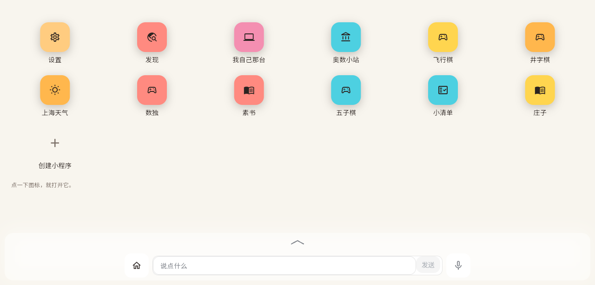

| 参赛作者：＿＿＿＿＿＿＿＿ | 年级：＿＿＿＿＿＿ |
| 学校：＿＿＿＿＿＿＿＿＿＿ | 指导教师：＿＿＿＿＿＿ |
| 完成日期：2026 年 ＿＿ 月 ＿＿ 日 | 演示方式：现场真机演示（手机 / 电脑浏览器） |
我做的作品叫「琥珀」，是一个会自己动手把事情办完的私人助理。用户对着它说话，它不只是聊天： 它会真的去查资料、写代码、做计算，做完主动回来告诉用户结果；它记得住以前说过的事；出了错会如实说， 半途被打断也能接着说。它最特别的地方是它能给用户"造软件"：用户说一句 「帮我做一个记账的小程序」，它当场写出程序，桌面上当场长出一个图标，点开就能用、数据还存得住。 为了让不会打字、也看不清小字的人也能用，整个界面守着三条硬规矩：字放到 3 倍不破版、 每个按钮的可点范围不小于 44 像素、不允许出现只有图形没有文字、按不动的按钮。 系统用「一人一台专属小主机」的方式保证隐私：每个人的数据、钥匙、助手都跑在自己那台隔离的小主机里。 目前的版本（V1.0）已经在真实的服务器和真机上运行（三台用户的小主机在跑），1513 条自动判据全部通过。
打开琥珀，看到的是两样东西：一个聊天窗口，和一个桌面。 桌面上一格图标 = 一个小程序 = 它和用户之间的一条对话。用户可以打字，也可以按住麦克风说话。
这句话拆成三条能验证的行为：

它是给不太会用智能手机的人做的：不会拼音、看不清小字的长辈。这类用户有三个真实困难： 打字慢或者根本不会打；界面字太小、按钮太小，点不准；听不懂"工作区、云端、客户端、模型"这些词， 而这些词恰恰是大多数 AI 软件界面上到处都是的。所以本项目把这三件事当成缺陷来管， 而不是当成"风格问题"：
| 常见问题 | 琥珀怎么处理 |
|---|---|
| 只会说，不会做；说得头头是道，事情没办 | 助手手里有真的工具（读文件、跑命令、查网、造小程序），并且每一轮活都落账：做了什么、成没成、花了多少，都查得到 |
| 做完不说，用户不知道到底办没办 | 收口时主动说结果；失败也主动说清是哪一步没成，而不是悄悄卡住 |
| 中途被打断就"失忆"，或者干脆假装没发生过 | 它把"还开着的活"逐件记在盘上；重启后会逐件如实回答"做完了 / 已停"，不会变成"查无此事" |
| 用户不敢把隐私交给它 | 一人一台隔离的小主机，钥匙只在自己那台里，连助手自己都读不到明文钥匙 |
系统由三部分组成：用户手上的界面、一台负责转发与记账的中心服务， 以及每个人自己的那台小主机（用容器做的隔离环境，我们叫它"盒子"）。 真正干活的东西（助手、聊天记录、小程序、钥匙）全都在用户自己的盒子里。
用户说一句话，在系统里不是"丢给大模型答一句"，而是变成一件有票、有账、有结局的活：
（1）当"大脑和手"：由大模型驱动的工具调用
助手背后是一个大语言模型（低推理开销那一档，响应快）。它做的不是"续写文字"，而是 决定下一步用哪样工具、看结果、再决定下一步，直到这件事办完。 这些工具的调用与结果都进聊天窗口的记录里 —— 也就是说，用户能看见 AI 是怎么一步步做事的， 不是黑箱里冒出一个答案。
（2）当"程序员"：由 AI 写出来的小程序，跑在沙箱里
这是本作品最有意思的一段。用户说「帮我做一个记账的小程序」，系统做了四件事：
每个小程序都跑在一个关起来的沙箱里：代码是只读挂载进去的；每个小程序有自己的一格数据库， 别的程序读不到；它想联网、想连哪个网站、想用 AI，都要用户第一次打开时点过头才生效 （默认什么都没有）。它上网还会留痕：去过哪些域名、多少次，都记在账上（不记录内容）。
（3）当"耳朵和嘴"：听得见，还要听得懂（在研）
现在已经做到的：按住麦克风说话，语音流式识别成文字（用的是豆包大模型语音识别），说完文字就在输入框里。 正在做的下一版（V2.0 第一件）解决的是一件更细的事： 听清楚了，不等于理解对了。所以我们加一层"只听懂、不创作"的快速模型：
这一层的关键设计是"宁可问一句，也不替用户猜"：因为猜错以后，助手会真的照错的去做。
我用了一套"先立规矩、再写代码，而且每一步都要能被推翻"的做法：
| 检查 | 结果（2026-10-04 实测） |
|---|---|
| 服务端自动判据 | 1513 条全部通过，0 条失败（分布在 142 个判据文件里）；其中不少是端到端判据：真起服务、真连连接、真开容器 |
| 客户端自动判据 | 静态分析 0 问题；逻辑判据全过；可访问性硬检查（3 倍字号五档不破版 + 可点范围 ≥44 + 不封顶）全过；其余 128 份界面判据全过 |
| "线上跑的就是代码这一版" | 漂移检查：网页产物指纹与仓库一致；三台用户盒子跑的程序版本与仓库同一份 |
| 真机（公网） | 对外服务 200；浏览器探针实测：页面打得开、它自己建立的数据连接通（1 条连接、202 帧、登录凭证自动续期）；并人工看了截图确认界面正常 |
| 文档检查 | 199 份文档里的相互引用全部指向存在的文件（没有悬空引用） |
| 开机完整性 | 220 个"开机必读"文件有哈希清单（root 只读）：被改过一个字节就拒绝启动 |
怎么读这些数字：1513 不是"跑了 1513 次断言"，而是 1513 条"这件事应该是什么样"的判据； 而且每条判据都要求能被"改坏代码"证明它是有效的（第 4 节的第 3 条）。
| # | 防线 | 具体做法 |
|---|---|---|
| 1 | 助手只能提申请，签字的是人 | 要改动运行中的系统（装东西、改配置），助手把命令准备好，由人按键执行。理由是：真正的危险不是"它干一次坏事"，而是"坏事能不能留下来"——比如它读到一段看不见的网页内容，被诱导写进自己的配置，从此每次开机都读它，而表面上一切正常 |
| 2 | 一人一台盒子 | 容器隔离 + 只读代码层 + 资源上限；跨用户看不到对方任何东西 |
| 3 | 钥匙不出盒子 | 盒内特权小程序握钥匙，助手只有占位符；日志和回复里永不出现钥匙 |
| 4 | 小程序：声明 ≠ 已给 | 小程序说"我想要联网 / 想用 AI"只是它想要；用户第一次打开时一张弹窗一次问完，点过头的才生效；数据天生就有存储，但每格独立、跨格读不到、随时能一键清空 |
| 5 | 上网留痕 | 助手能访问网络，但去过哪、多少次都落账（不记录内容），可查 |
| 6 | 开机完整性清单 | 决定"它下次开机读什么"的文件（人格、规范、能力清单），哈希写在 root 只读清单里，动过就拒绝启动；每次重建都留痕 |
| 7 | 删除要二次确认 | 删之前先把它要带走的东西（聊天 / 数据 / 经验）逐条摆出来再问一次；服务端是软删除，还能拿回来 |
| 8 | 页面不许说假话 | 做不到的事不许画按钮；拿不到的事实不许猜（"不知道"就说不知道）。这条被当成缺陷来管，有判据盯着 |
| 评委关注点 | 本作品对应的东西 |
|---|---|
| 技术性 | 自己实现的调度内核（可收口的轮次、落盘账本、崩溃后接管）· 自建"一人一台盒子"的容器编排 · 流式语音识别 · 小程序沙箱（只读挂载 + 逐格数据库 + 权限弹窗 + 上网留痕）· 1513 条判据 + 变异验证的工程方法 |
| 智能性 | 大模型不只是聊天：它会写代码造小程序、长期记住用户的事、把长活放到后台自己办完再汇报；下一版还要加"先说懂、再问一句、才发出去"的理解层 |
| 实用性 | 服务对象明确（不会打字、看不清小字的人）；一句话就能办事；桌面上的东西看得见、摸得着、能撤；已经在真实环境运行，不是演示品 |
| 安全性 | 第六节的八条防线；其中最硬的三条是"助手只能提申请、人按按钮"、"钥匙不出盒子"、"开机完整性清单" |
| 时间 | 演示什么 | 怎么讲 |
|---|---|---|
| 0:00 | 打开页面 → 登录 → 桌面 | "这是他自己的桌面。每一格是一个小程序，也是它的一条对话。" |
| 0:30 | 按住麦克风说一句人话（语音输入） | "我不用打字，说一句就行。"（指屏幕上的字） |
| 1:00 | 让它做一个小程序："帮我做一个记账的" | "它现在真的在写代码。"（指桌面上新长出来的那一格：灰的、转着圈） |
| 1:45 | 等它做完，那一格自己变回正常颜色，点开用一下 | "做好了它自己变回来，点开就能用。"（记一笔，再打开还是那笔 —— 数据存住了） |
| 2:45 | 让它干一件长一点的活，然后合上页面 | "长活它自己放后台办，办完会主动告诉我。" |
| 3:15 | 回到桌面，看"在做"的小圈在转 | "哪一件还在办，桌面上看得见。" |
| 3:30 | 说一句含糊的话，演示"它问一句"（下一版功能） | "听不清它会问，问清楚才发出去 —— 不替我乱猜。" |
| 3:50 | 打开设置里的安全项目 | "他自己的钥匙、他点头才开的权限、还有这份开机清单。" |
演示提示：现场演示前先进入「设置」里的演练入口 —— 那里是一个空白、临时的对话系统， 整条流程真跑，但一句都不会真的发出去，所以可以反复演示，不怕说错、不留垃圾。
| 词 | 在这个作品里是什么意思 |
|---|---|
| 大模型 / 大语言模型 | 能理解并生成自然语言的 AI 模型。这里它不只用来聊天，主要用来"决定下一步做什么、用什么工具"。 |
| 容器（盒子） | 一种轻量的隔离技术：在同一个操作系统里划出一块独立的小空间，里面有自己的一套程序和文件，互相看不见。这里"一人一台盒子"。 |
| 语音识别 / 语音合成 | 前者把说的话变成文字（耳朵），后者把文字念出来（嘴）。 |
| 判据 / 负向对照 / 变异验证 | 判据 = 一条"这件事应该是什么样"的自动检查；负向对照 = 先证明这个检查抓得住错误；变异验证 = 故意把规矩改坏，看检查是不是当场变红。 |
| 沙箱 | 把一段程序关起来运行的环境，限制它能碰到什么（这里是：代码只读、数据库一格独立、联网要用户点头）。 |